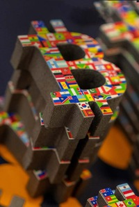

How cryptographically relevant quantum computers could threaten the financial freedom tool that dissidents and human rights defenders rely on — and what the Bitcoin community can do about it.


Drawing on six months of expert discussions — including conversations with quantum physicists, Bitcoin Core developers, cryptographers, wallet engineers, miners, and educators — this report explores how cryptographically relevant quantum computers could threaten Bitcoin's security and the activists who depend on it.
Many thanks to HRF Bitcoin Technical Lead, Alex Li, who drove the primary research.
Bitcoin is a financial lifeline for dissidents resisting authoritarian regimes. The rise of cryptographically relevant quantum computers (CRQCs) with the ability to crack Bitcoin's underlying cryptography could threaten the network's security foundations. A team of Google researchers recently published findings representing a quantum computing breakthrough: an algorithm enabled a quantum computer to carry out operations 13,000 times faster than a classical supercomputer.
While quantum computing remains largely theoretical, experts suggest CRQCs could emerge within the next five years. CRQCs could put millions of bitcoin stored in early address formats at risk, and endanger the wider trust that underpins Bitcoin as a tool for financial freedom.
The threat has sparked technical, political, and moral debates — including the "burn or steal" dilemma: whether to allow attackers to "steal" funds in early address formats, or "burn" those funds to make them unspendable. Post-quantum cryptography offers solutions, but migration will require years of research, coordination, and consensus.
Bitcoin is a powerful tool for safeguarding human rights, promoting financial freedom, and resisting authoritarian control. Tyrannical governments frequently manipulate and surveil their currencies, seeking to silence critics by confiscating property and freezing bank accounts. Dissidents, human rights defenders, journalists, and non-profits under dictatorship face enormous obstacles just to receive donations and pay their bills.
HRF's Financial Freedom program supports Bitcoin as a tool for activists facing financial repression: money that dictators can't stop.
Quantum threats to Bitcoin's classical cryptography are still years away. However, if CRQCs emerge before Bitcoin's cryptographic foundations are upgraded, activists who rely on Bitcoin for secure donations, private savings, and uncensored transactions would find their privacy and safety compromised — and dictators might find ways to steal or stop their money.
Making Bitcoin quantum-proof poses political and social challenges as well as technical ones. Its decentralization means any upgrade requires coordination and consensus among a diverse and ideologically divided user base. Any change to cryptographic signature schemes requires widespread education for users, developers, node operators, and miners. The community must also consider the 1.72 million bitcoin held in early addresses most vulnerable to CRQCs. Proposed changes have already sparked huge debates over trade-offs between performance, privacy, and backward compatibility.
Quantum computers exist today, but they remain years away from the scale, stability, and precision required to threaten Bitcoin's cryptography. Experts remain divided over whether CRQCs capable of breaking Bitcoin's security will ever emerge. Some emphasize incremental breakthroughs will provide time for solutions; others caution sudden advances could accelerate the timeline unpredictably.
At this year's Presidio Bitcoin Quantum Summit — convening quantum physicists, Bitcoin Core developers, cryptographers, wallet engineers, miners, and educators — evolving expert views on CRQCs came into sharp focus.
Quantum computing is real. But there are so many things to do. You don't need to worry too much about it, but at the same time, probably it's not a good idea to ignore it… Five to ten years is not a crazy number.— Sho Suigara, CEO of Blocq
At the outset, 25% of attendees were unsure whether CRQCs would ever pose a meaningful threat. After two days of intensive discussion, uncertainty dropped to just 8%. The share who believed CRQCs would arrive in 5–20 years jumped from 49% to 69%, signaling a clear shift toward urgency.
Not all bitcoin will be equally vulnerable. Quantum threats fall into two categories: long-range and short-range attacks, each exploiting different weaknesses in how public keys are exposed across Bitcoin's history.
A quantum adversary targets bitcoin whose public keys are already exposed — in older address types (P2PK, P2PKH with reuse), or taproot (P2TR) addresses. Approximately 6.51 million bitcoin (over $718 billion), nearly a third of total supply, is vulnerable. Active users can protect their funds by migrating to quantum-safe addresses, securing 4.49M of the at-risk bitcoin. But the remaining 1.72 million bitcoin ($188B), with owners' private keys thought lost, can never be migrated. Satoshi Nakamoto's estimated 1.1M BTC sits in P2PK addresses with exposed public keys.
These exploit the brief window between a transaction's broadcast and its confirmation. A CRQC could intercept an unconfirmed transaction, derive the private key from the exposed public key in real time, and redirect funds before the original transaction is confirmed. All bitcoin is vulnerable to short-range attacks until post-quantum signatures are adopted.
Someone is going to transition through this phase transition, and it's going to come just as fast as AI came and hit people in the face.— Terry Rudolph, CEO of PsiQuantum
Modern Bitcoin infrastructure introduces another vulnerability. Most wallets and portfolio trackers store public keys. If these companies are hacked in a CRQC world, attackers could derive private keys and steal users' funds. Hardware wallets, custody providers, and accounting platforms will all need fundamental reevaluation.
Integrating quantum-resistant signature schemes into Bitcoin represents the only durable solution to the quantum threat. Two proven approaches exist, each with significant trade-offs that the Bitcoin community must weigh carefully.
More compact signatures that support multisig, key aggregation, and deterministic derivation — all features critical for human rights defenders using collaborative custody. These schemes introduce newer cryptographic assumptions that still require extensive vetting by the academic community.
Examples: CRYSTALS-Dilithium 44, FALCON 512
The most mature post-quantum option with proven mathematical foundations that have been studied for decades. Larger signature sizes make key aggregation and multisig more complex to implement efficiently.
Examples: SPHINCS+, XMSS, Lamport
These dramatic size increases would reduce the number of transactions that fit in each block, decrease throughput, and substantially increase storage demands on full nodes. Any effort to increase blocksize or adjust the witness discount to accommodate larger signatures is likely to divide the community.
Bitcoin Improvement Proposal 360 is signature scheme-agnostic — it makes taproot addresses more quantum-resistant and provides a flexible framework to accommodate a variety of post-quantum algorithms as they mature. BIP 360 represents the community's most promising path forward, allowing Bitcoin to adopt the best available quantum-resistant scheme without committing prematurely to a single approach.
Upgrading Bitcoin is as much a human challenge as a cryptographic one. Any successful soft fork will necessitate user education, thoughtful UI design, and coordination across a vast ecosystem of users, developers, hardware manufacturers, node operators, and civil society organizations.
Wallets are tightly bound to the current elliptic curve model. Quantum-resistant algorithms would introduce larger signatures, slower signing, and more complex verification — fundamentally changing how wallets operate. Hardware wallets face a particular challenge: they must adapt to new cryptographic primitives while preserving a seamless user experience, all with limited processing power and memory.
Sufficiently powerful quantum computers are hypothetical, and if they happen, there will likely be a long series of incremental breakthroughs that give us time for more fundamental solutions.— Pieter Wuille, Bitcoin Core contributor
Many Bitcoin users remain unaware that their coins may be vulnerable. Encouraging migration to quantum-safe outputs, when the threat remains abstract and years away, will be extremely difficult. Because Bitcoin has no central authority, every soft fork depends on voluntary adoption and grassroots coordination — a process that historically takes years.
Previous improvements like SegWit took years to reach meaningful adoption even with broad developer support. Post-quantum signature schemes that increase transaction sizes 10× or more will trigger intense debates about block space, scalability, and the fundamental resource constraints of the network.
A quantum-resilient soft fork must be socially durable as well as technically correct. Consensus in a decentralized network is slow, fragile, and precious. Above all, it must remain faithful to Bitcoin's core principles: privacy, decentralization, and freedom from coercion.
To protect 1.72 million dormant bitcoin from long-range quantum attack, some in the Bitcoin community advocate a "burn" — rendering quantum-vulnerable coins unspendable after a migration window. Advocates argue this protects monetary integrity, prevents a destabilizing wealth redistribution, and reinforces that cryptographic theft is not valid ownership.
Others worry this would violate property rights and Bitcoin's promise of immutability. The theft of millions of bitcoin could undermine value and trust for all holders — but so could a unilateral decision to freeze coins that may still have living owners.
Render vulnerable coins permanently unspendable to prevent quantum theft
Set a deadline for migration, then reduce vulnerable coins over time
Accept quantum seizure risk to preserve immutability
The quantum threat to Bitcoin is not imminent — but it is real, and growing more urgent. The shifting expert consensus at the Presidio summit signals the community must begin preparing now. The stakes are uniquely high for human rights defenders — Bitcoin is often their only tool for receiving funds, preserving savings, and transacting freely under authoritarian regimes.
The technical solutions exist. BIP 360 provides a flexible, scheme-agnostic framework. Lattice-based and hash-based signatures offer proven quantum resistance. But implementation demands social consensus in a decentralized ecosystem where every change is debated and voluntarily adopted.
Above all, a soft fork must remain faithful to Bitcoin's underlying principles: privacy, decentralization, and freedom from coercion.
Anything less risks the financial freedom of the dissidents and human rights defenders who need Bitcoin the most.
| Property | Lattice-Based | Hash-Based |
|---|---|---|
| Examples | CRYSTALS-Dilithium 44, FALCON 512 | SPHINCS+, XMSS, Lamport |
| Signature Size | ~10× current | ~38× current |
| Maturity | Newer; still needs extensive vetting | Most mature PQ option |
| Multisig Support | Easier to implement efficiently | More complex implementation |
| Key Aggregation | Supported natively | Complex; limited support |
| Deterministic Derivation | Supported | Limited (stateful schemes) |
| Human Rights Use Case | Collaborative custody, multisig donations, dissident coordination | High-value secure storage, censorship-resistant savings |
Hash-based schemes (SPHINCS+, Lamport) produce signatures ~38× larger — extending well beyond this chart. The size increase poses significant challenges for block space and node storage.
The Human Rights Foundation promotes and protects human rights globally. HRF's Financial Freedom program supports Bitcoin as a tool for activists facing financial repression.